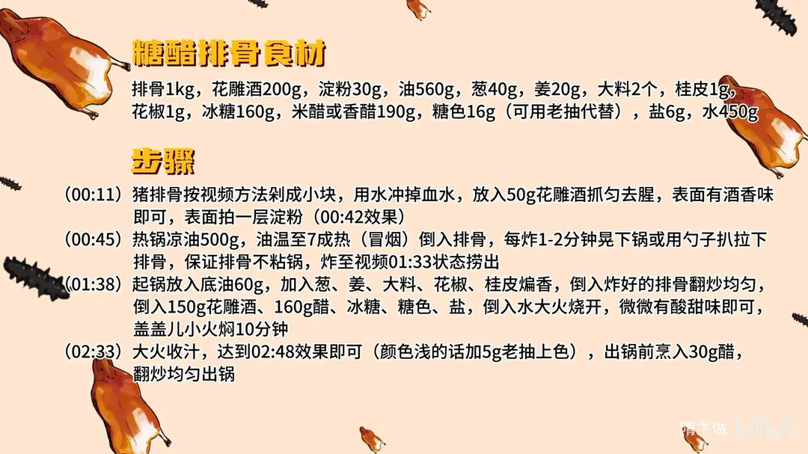

糖醋排骨
隋卞一做。下饭菜投票前三。关键在炸够狠、糖醋汁收浓。
原视频：https://www.bilibili.com/video/BV1zZtZe4ERt
食材
排骨、花雕酒（腌）、淀粉（拍粉） 等 16 样
| 类别 | 用料 | 用量 |
|---|---|---|
| 主料 | 排骨 | 1kg |
| 主料 | 花雕酒（腌） | 50g |
| 主料 | 淀粉（拍粉） | 30g |
| 炸制 | 油 | 560g |
| 炒制 | 葱 | 40g |
| 炒制 | 姜 | 20g |
| 炒制 | 大料 | 2 个 |
| 炒制 | 桂皮 | 1g |
| 炒制 | 花椒 | 1g |
| 调味 | 花雕酒 | 200g |
| 调味 | 冰糖 | 160g |
| 调味 | 米醋或香醋 | 190g |
| 调味 | 糖色 | 16g（可用老抽代替） |
| 调味 | 盐 | 6g |
| 调味 | 水 | 450g |
| 出锅 | 醋 | 30g |
步骤
- 焯洗：排骨剁成小块，用水冲掉血水，放入 50g 花雕酒抓匀去腥，表面有酒香味即可，表面拍一层薄淀粉。
- 炸排骨：热锅凉油 500g，油温至七成热（冒烟）倒入排骨，每炸 1–2 分钟晃下锅或用勺子扒拉一下，保证排骨不粘锅，炸至表面金黄有焦褐感捞出。
- 烧制：起锅放底油 60g，加葱、姜、大料、花椒、桂皮煸香，倒入炸好的排骨翻炒均匀，倒入 150g 花雕酒、160g 醋、冰糖、糖色、盐，倒入水大火烧开，微微有酸甜味即可，盖盖儿小火焖 10 分钟。
- 收汁：大火收汁至浓稠，颜色浅的话加 5g 老抽上色，出锅前烹入 30g 醋增香，翻炒均匀出锅。
小贴士
- 排骨一定要炸够狠，表面焦褐、口感带脆，后面用水收汁才不会柴。
- 调汁时宁可比目标略淡，因为收汁后酸甜会变浓。
讲解要点
难度：★★★☆☆（不难，但要炸得狠、汁收得准，油温和糖色是两道坎）
为什么这么做
- 排骨尽可能翻着剁：刀直着落会把肉挤碎、骨渣多；翻着剁让刀顺着骨缝走，块形完整，烧完不散。
- 腌完拍一层薄淀粉：淀粉吸住表面水分，下油锅不爆油，还能炸出一层薄壳，后面挂汁才有依托。
- 必须先煎炸：这一步是让排骨脱水、把表面多余的油脂炸掉，它才有空隙重新吸收糖醋汁；不炸的排骨表面水多、发软，汁只挂在外面。
- 下锅别急着扒拉：先让表面定壳，晃锅能晃动就证明没粘，这时候再翻动不破皮。
- 醋选米醋：香醋、陈醋味道重、颜色深，调色时要减量；米醋色浅酸爽，糖醋汁才透亮。
- 烧的时候酸甜要留薄：汤多时尝着刚好，收浓后酸甜会成倍加重，宁可比目标味淡一点。
- 出锅前再烹一次醋：烧进去的醋酸早挥发了，最后这一勺补的是「醋香」，不是酸味。
容易翻车
- 油温不到七成就下排骨，排骨吸油、粘锅，表面还发白。
- 淀粉拍厚了，炸出来一层硬壳，咬着费劲还挂不上汁。
- 收汁时走开，糖分容易糊底发苦。
- 焖的时间不够，肉咬不动；焖过头，排骨从骨头上散下来。
热评补充
- 无锡做法可以先炒香葱姜再下排骨，醋和冰糖一次加足——中途补醋烧不进去；水面不没过排骨，留出头来，因为排骨会缩水；全程靠醋糖浓缩收稠，不勾芡，勾了芡味道就寡了。
原片尾卡

原片文案
AI 字幕校准稿
每次下饭菜投票前三的超级下饭菜，糖醋排骨，我的版本。排骨是猪腔里边那一条，外面这面要这么剁，直着剁会把肉挤碎，尽可能翻着剁，看这样。
冲一下排骨里面的血水。我们在里边少放一点花雕酒，简单地去个腥，闻着有酒香味就可以了。腌匀了之后，表面拍点淀粉，很薄一层就可以了，前面的活就完了。
热锅凉油，咱们把排骨煎炸一下。这一步主要是让排骨脱水，把表面多余的油脂炸掉，让它重新吸收糖醋汁的味道。快点冒烟了，然后把排骨倒进去。
不用着急扒拉它，炸个一分钟两分钟，然后就动一下。你看一晃锅它都在晃，那就证明这排骨没粘锅，扒拉一下，搅和搅和再炸。炸还得炸黄一些，怎么也得把表面炸得金黄金黄的。
炸这样就可以了，表面有焦褐感了，颜色金黄了，捞出来。锅里边重新放入底油，加入葱姜大料、花椒、桂皮——具体的量也不用记，都会给你们放到片尾。煸香了之后，把排骨倒进去，放花雕酒。
醋呢，咱们尽量选择米醋，香醋、陈醋的味道会稍微重一点，色也会稍微重一点，您调色的时候就要注点意了。冰糖加上点焦糖色，要咸甜，一勺盐。大火烧开，把里边的冰糖全部烧化，定个味。
现在汤比较多，这个酸甜味稍微薄一点，就一点点的酸甜味就可以了。现在你要吃酸甜度合适，估计一会儿收完汁就没法吃了。盖盖，关小火，焖上它 10 分钟。
到点了，然后给它转成大火，开始收汁。颜色稍微浅一点，来点老抽。现在汁收好了，快出锅的时候再烹点醋，增加点醋香味。好了，出锅。
他的肉香味真的好足，我觉得咱炸的那个火候特别好，你能明显吃出来，酸甜味进到那个肉的里面，说明咱们炸得足够狠。它稍微有一点点焦香味，但因为咱们是用水在慢慢地给它收汁，所以这里面也完全不柴。关键点：做糖醋排骨一定要炸，千万千万记住了，表面水多、软了就不好吃了。